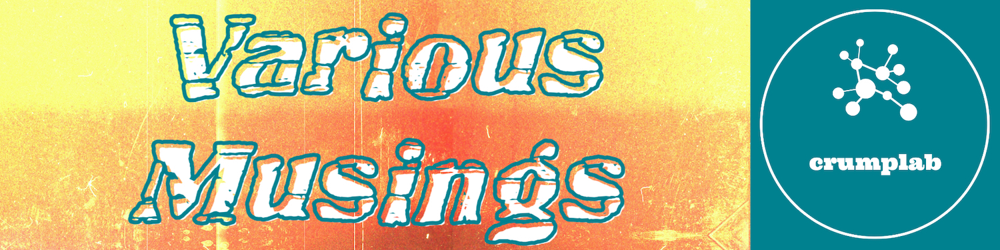

~/crumplab/blog
Blog
Various musings, usually about cognition, teaching, and other stuff, incomplete notes, digital breadcrumbs on scratchpads.
And now for something completely different: Department Chair
Very brief comments on the next three years.

midiblender: Experiments in genRative MIDI mangling
An experimental R package for MIDI manipulation in R.
Musing about music cognition
It's the beginning of a new semester and i'm thinking about doing more music cognition research this round. Mostly a long ramble.
┌─ index · all posts35
showing posts tagged
Jan 18, 2024
Sep 21, 2023
Jul 13, 2023
Jun 26, 2023
Jun 21, 2023
Jun 20, 2023
Jun 8, 2023
Jun 7, 2023
Jun 6, 2023
Feb 18, 2023
Nov 10, 2022
Nov 10, 2022
Nov 9, 2022
Nov 7, 2022
Oct 30, 2022
Oct 28, 2022
Oct 16, 2022
Aug 25, 2022
Aug 23, 2022
Jul 7, 2022
Jun 28, 2022
May 26, 2022
May 17, 2022
May 17, 2022
No matches.
No matching items